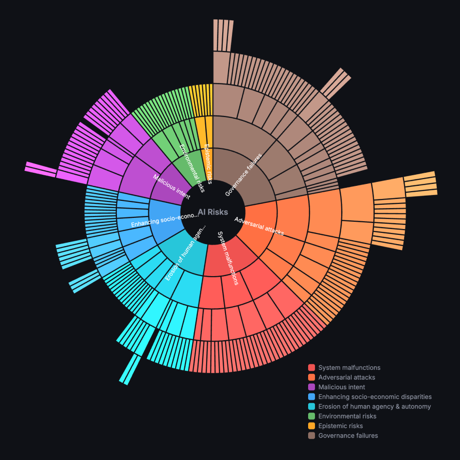

AI Risk Taxonomy
There are many risk taxonomies out there operating from various perspectives, from entirely technical risks to higher-level societal harms. This project aimed to synthesize them into a single, comprehensive taxonomy, as an approachable entry point for practitioners.
Links
